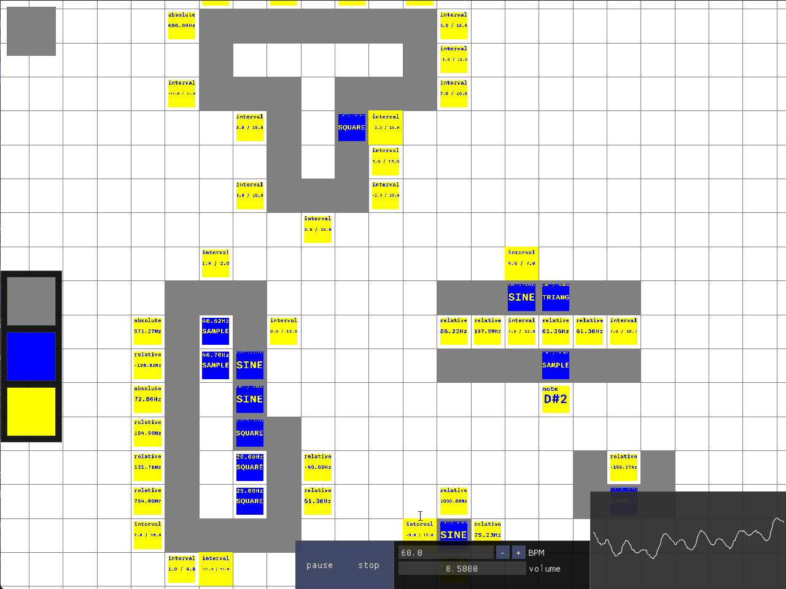
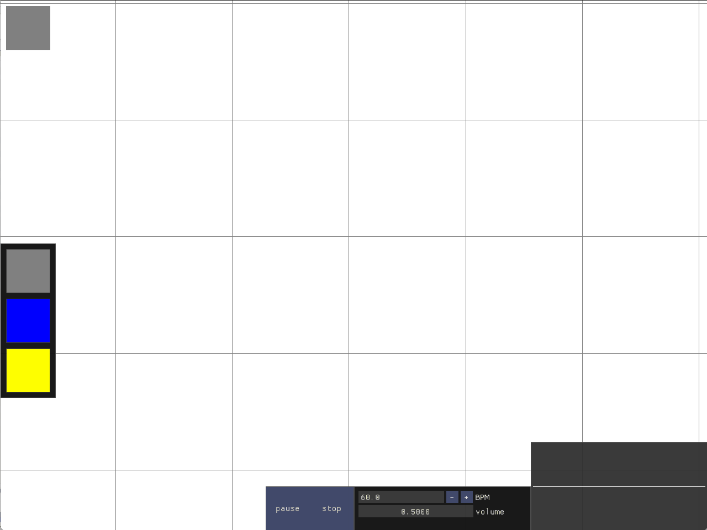
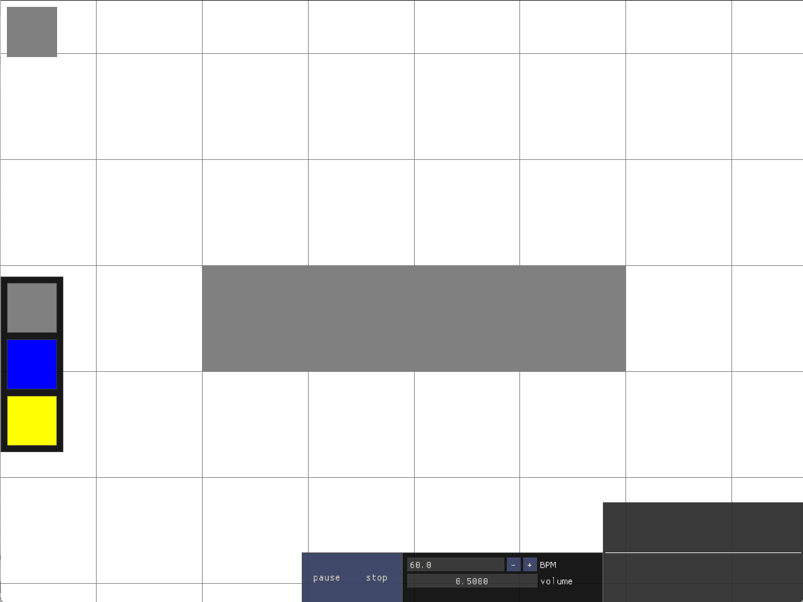
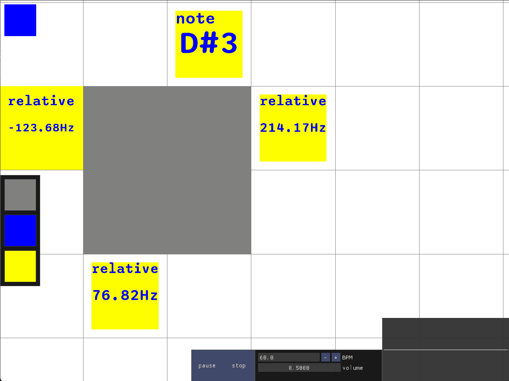
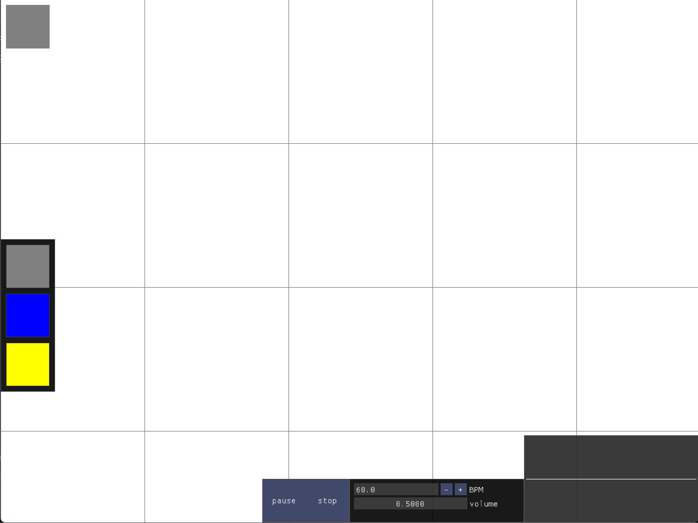

gemuPG
A Generative Music Poly* Grid

Abstract
Conventional music software, like Digital Audio Workstations (DAWs) and notation tools, adhere to established rules of traditional Western music composition, which limits creative composition in rhythmic and tonal dimensions. The new open-source music environment gemuPG aims to explore the capabilities of a software-centric approach to music-making that is not bound to traditional approaches. The design focuses on inherent use of polymeters, polyrhythms, and microtonality. The term poly* (pronounced 'poly asterisk' or simply 'poly') is therefore introduced, which groups these concepts together. A grid-based interface rethinks audio tracks as areas on a two-dimensional grid. Generator blocks can be placed within these areas to create virtual instruments through additive synthesis. Sequencer blocks are placed on the sides of the areas to create the respective area's sequence. The length of each area's sequence therefore corresponds to its circumference.
Areas

Sequencers

There are four types of sequencer blocks, designed to encourage microtonality. The 'absolute' type sets the current frequency to a set value. The 'relative' block adds or subtracts an offset from the previously set frequency. Sequencer blocks of type 'note' allow for selecting a note from the twelve-tone equal temperament system (mainly for accessibility). Lastly, 'interval' blocks transpose the last frequency by a number of steps in a configurable edo (equal division of the octave) scale.
Generators

Demo Video
Future Additions
Some planned features are yet to be implemented. Namely, effect blocks, which would affect areas as a whole, parallel sequencer blocks, allowing for chords, and (at least) stereo audio with panning settings for generator blocks. Furthermore, modulator blocks, which could affect variables of up to four adjacent generator, effect, or other modulator blocks would allow for frequency or ring modulation synthesis. Additionally, conditional statements - possibly also implemented in the form of blocks within areas - could toggle other blocks or variables based on various factors, such as the amount of loop iterations passed, the current frequency, or even just based on a random distribution. Lastly, selectable mute groups for areas and generator blocks would allow gemuPG to be used as a versatile live performance instrument.Compile instructions...
I wrote gemuPG in C++20 using SDL3 and Dear ImGui. It is distributed under the GNU
AGPLv3 license and is available on Github:
https://github.com/sly-roccoon/gemuPG/releases
git clone https://git.iem.at/aronpetritz/gemupg.git --recurse-submodules
#recurse-submodules is important!!
cd gemupg
mkdir build
cd build
cmake -S .. -B .
make -j$(nproc)
Try it out!

This emscripten build is very experimental... File I/O does not work here and things run very poorly...
I made gemuPG for my bachelor's thesis which can be read here if you're interested. :)
A shorter paper written for the AES Europe 2025 Student Project Expo can be downloaded here.